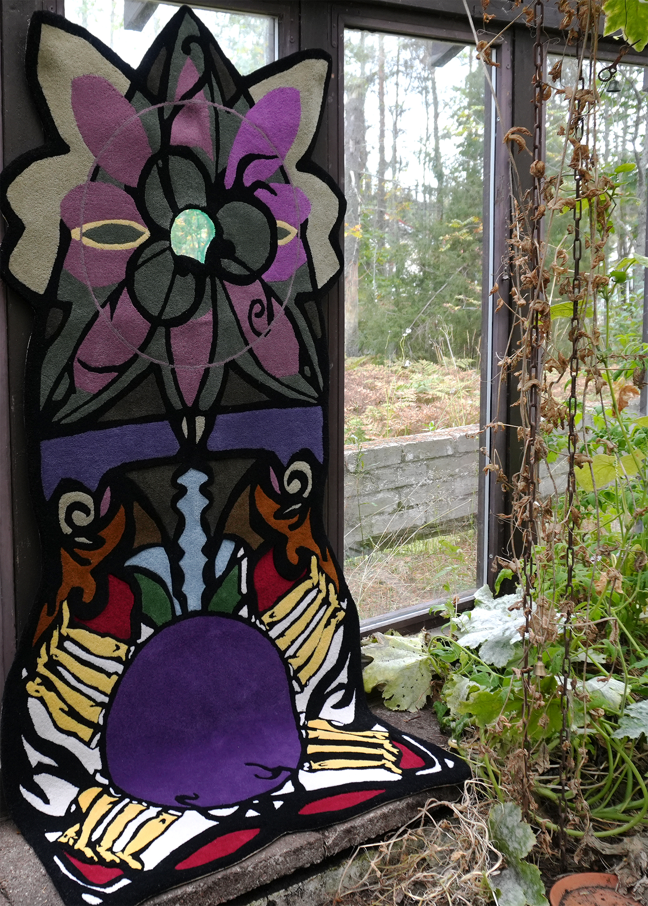

Poem / audio recording
Once in a while they change the pythons in the temple in Benin
Once in a while the snakes shed their skins
Once in a while the Buddha statues are taken down and replaced
Once in a while the color wheel rotates
Once in a while immigrants are welcome and then they are not
Once in a while an elephant is taken out of the fridge
Once in a while it is put back in again
Once in a while garbage is shipped to a far-away place
Once in a while the working parents come back to the hometown
and see how much their kid has grown


The installations transform traces of the past into tangible forms—sculptures, sound work of poetry, and participatory rituals—inviting viewers to engage with the body, objects, and spaces as sites of remembrance and reflection. The series addresses how to access fragmented memories across feminist, queer, and postcolonial frameworks.
Through these works, I explore the legacies of migration, trauma, and cultural memory, while giving form to stories that cannot be fully spoken, allowing absence and loss to inhabit space and matter.